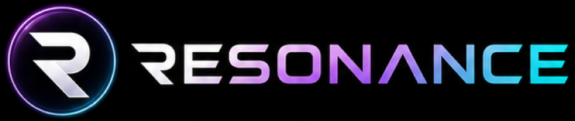
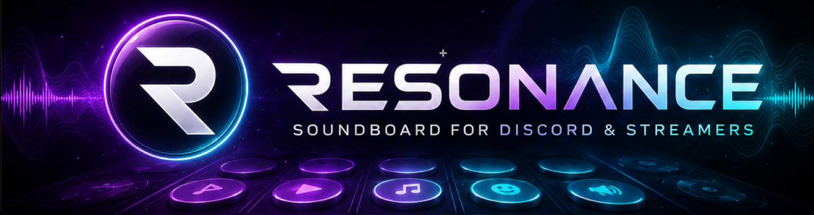
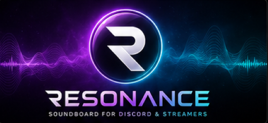

Le soundboard des créateurs
Pads circulaires, routing audio avancé, Discord Rich Presence. Gratuit, open source, sans pub.
Télécharger pour WindowsWindows 10/11 · 64 bits · Gratuit

Attribue un emoji ou une image à chaque son. Glow violet quand le son joue, hotkeys globaux, glisser-déposer pour réorganiser.
Envoie tes sons sur Discord, OBS ou n'importe quel logiciel. Écoute-toi en même temps sur ton casque. Monitoring personnel intégré.
Quand un son joue, ton micro baisse automatiquement dans le flux pour que le son ressorte proprement. Puis il remonte.
Déclenche n'importe quel son depuis le bureau, pendant un jeu, sans quitter ton application. Ctrl+Alt+F1, Alt+5, ce que tu veux.
Affiche "Joue à Resonance" et le nom du son sur ton profil Discord. Montre à ton groupe ce que tu balances.
Choisis entre Obsidian, Cyberpunk, Midnight Blue et Soft Purple. Design premium avec reflets, flous, bordures lumineuses.
Outil gratuit qui crée une sortie audio virtuelle. Télécharge-le sur vb-audio.com.
Télécharge le setup, lance-le. L'assistant te guide. Sélectionne VB-CABLE comme sortie audio.
Importe tes fichiers audio, assigne un emoji, appuie sur le pad. Tout le monde t'entend sur Discord.
L'assistant de premier lancement te guide en 30 secondes. Pas besoin d'être ingénieur son.
